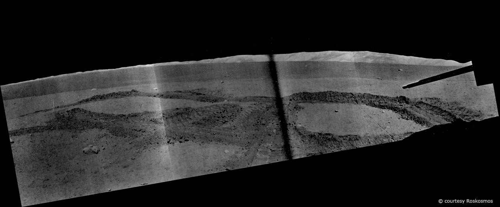
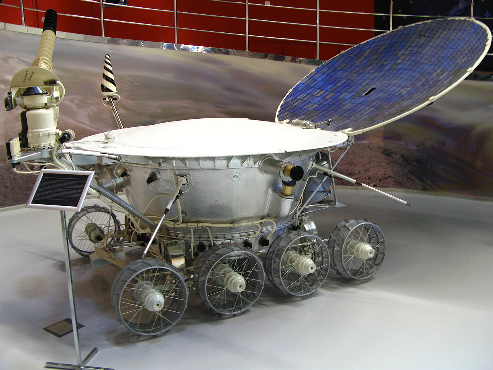
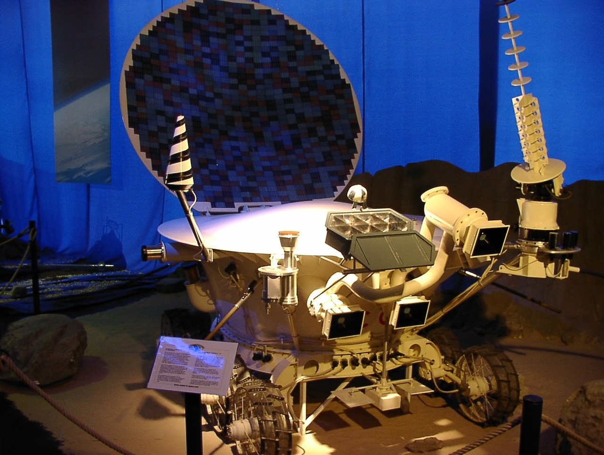
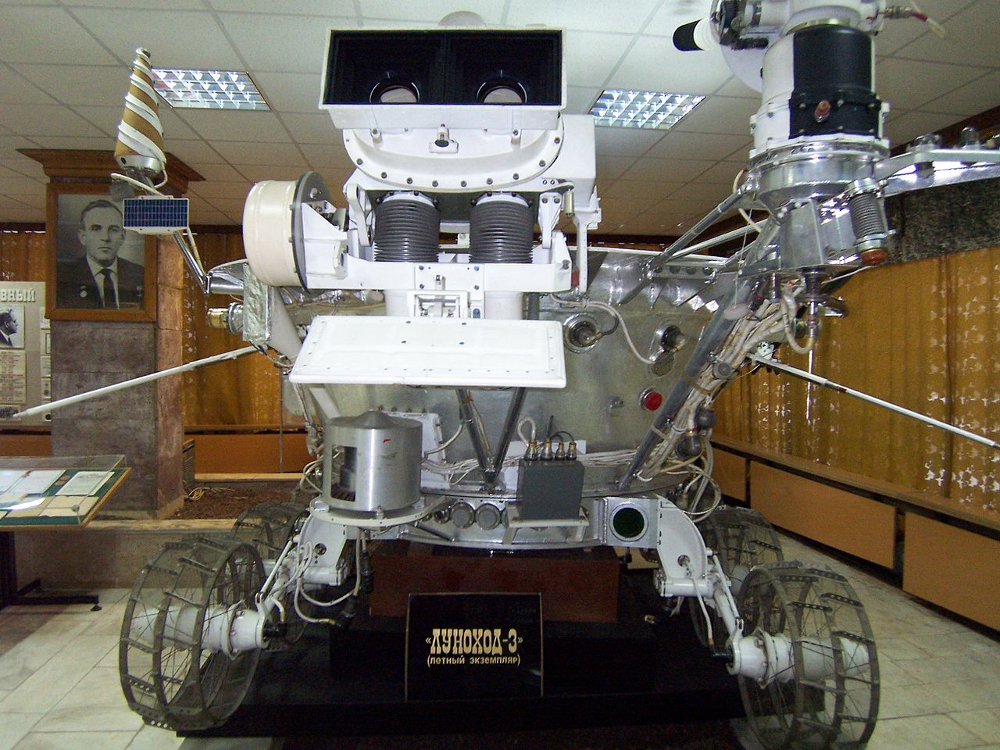
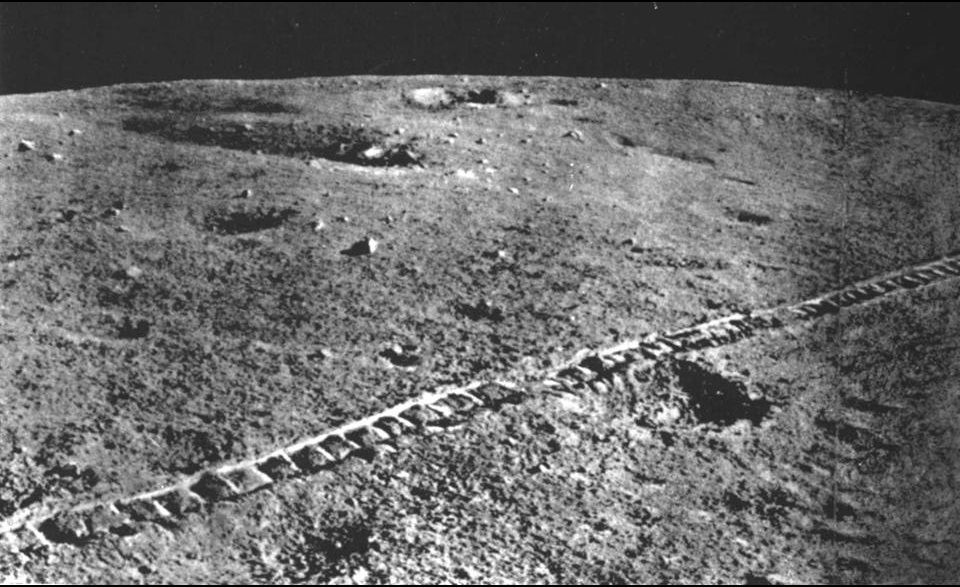

Архив космических миссий
«Луноход»— планетоход, предназначенный для передвижений по поверхности Луны. В более узком смысле луноход есть транспортное средство (транспортная платформа), предназначенное для передвижений по поверхности Луны. Луноход мог управляться как дистанционно (например, с Земли), так и служить самоходным роботом. Ярким примером является «Луноход» («проект Е-8») — серия советских дистанционно управляемых самоходных аппаратов-планетоходов для исследования Луны. В честь двух запущенных в рамках неё аппаратов была названа равнина на Плутоне (лат. Lunokhod Planitia), название утверждено МАС 3 февраля 2021 года.
В рамках реализации советской лунно-посадочной пилотируемой программы Н-1-Л3 в экспедициях предусматривалось использование модификации луноходов, дооборудованных радиомаяком (для предварительного выбора места посадки) и ручным управлением (как транспорт для перемещения космонавта).
В рамках программы было созданно 4 апарата "Луноход":
«Луноход-0» — автоматический луноход, который должен был стать первым и мог значительно опередить американскую экспедицию «Аполлон-11». На Луну не прибыл вследствие неудачного старта ракеты-носителя с аппаратом Е-8 № 201 19 февраля 1969 года. Причина аварии — разрушение головного обтекателя ракеты-носителя;
«Луноход-1» — первый автоматический луноход, благополучно доставленный на Луну и выполнивший на Луне поставленную задачу. Доставлен на Луну 17 ноября 1970 года советским лунным кораблём-автоматом «Луна-17» (Е-8 № 203), стартовавшим 10 ноября 1970 года;
«Луноход-2» — второй автоматический луноход. Доставлен на поверхность Луны 16 января 1973 года советским лунным кораблём-автоматом «Луна-21» (Е-8 № 204), стартовавшим 11 января 1973 года;
«Луноход-3» — третий автоматический луноход. Должен был быть доставлен на поверхность Луны в 1977 году советским лунным кораблём-автоматом «Луна-25» (запуск не состоялся). В настоящее время действующий экземпляр находится в музее НПО имени С. А. Лавочкина.
Автоматическая межпланетная станция «Луна-17» с «Луноходом-1» стартовала 10 ноября 1970 года и 15 ноября вышла на орбиту искусственного спутника Луны. 17 ноября 1970 года в 03:46:50 по всемирному времени станция благополучно прилунилась в Море Дождей в точке с координатами 38,25 ю.ш. и 325,00 в.д. с вертикальной скоростью около 2 м/с. На поверхность Луны был доставлен пятиугольный вымпел с барельефом В. И. Ленина, Государственный флаг СССР и Государственный герб СССР. В 06:28 UT были откинуты пандусы, «Луноход-1» открыл крышки телекамер и передал панораму пандусов, чтобы убедиться в отсутствии препятствий, а затем съехал на лунный грунт, проехал 20 м по поверхности и поднял крышку с солнечной батареей для зарядки аккумулятора. За первые трое земных суток луноход проехал 197 метров и в связи с наступлением лунной ночи перешёл в ждущий режим.
В течение первых трёх месяцев запланированной работы помимо изучения поверхности аппарат выполнял ещё и прикладную программу, в ходе которой отрабатывал поиск района посадки пилотируемой лунной кабины. После выполнения программы луноход проработал на Луне в три раза больше своего первоначально рассчитанного ресурса (3 месяца). За время нахождения на поверхности Луны «Луноход-1» проехал 10 540 м, обследовав площадь в 80 000 м², передал на Землю 211 лунных панорам[прим 2] и 25 тысяч фотографий. Максимальная скорость движения составила 2 км/ч. Суммарная длительность активного существования Лунохода составила 301 сутки 06 ч 37 мин. За 157 сеансов с Землёй было выдано 24 820 радиокоманд. Прибор оценки проходимости отработал 537 циклов определения физико-механических свойств поверхностного слоя лунного грунта, в 25 точках проведён его химический анализ.
8 марта 1971 года операторы «Лунохода-1» в честь праздника дважды «нарисовали» на Луне колёсами цифру «8»:
Последний успешный сеанс связи состоялся 14 сентября 1971 в 13:05 по всемирному времени, на этот момент было отмечено неожиданное уменьшение давления в гермообъёме корпуса. К сентябрю 1971 года температура внутри герметичного контейнера лунохода стала падать, так как исчерпался ресурс изотопного источника тепла — к этому времени его тепловыделение упало более чем в 4 раза по сравнению с моментом посадки. 30 сентября аппарат на связь не вышел. 4 октября все попытки войти с ним в контакт были прекращены и было объявлено об официальном завершении программы.



